Chatur — Developer Guide
Chatur-DevGuide.md- Architecture cheat-sheet
- Roles and menu map
- Screen-by-screen code map
- Sign in (/sign-in)
- Register (/register)
- Start window (/start)
- Main window (/)
- Prerequisites (/prerequisites)
- Repository (/repository)
- Settings ▸ Model providers (/settings/providers)
- Settings ▸ Routing (/settings/routing)
- Settings ▸ Agents (/settings/agents)
- Settings ▸ Corrections (/settings/corrections)
- Settings ▸ Measurements (/settings/measurements)
- Settings ▸ Appearance (/settings/appearance)
- Settings ▸ Account (/settings/account)
- All projects (/all-projects)
- Working copies (/worktrees)
- Licence (/licence)
- Feedback (/feedback)
- Integrations (/integrations)
- Measurements (/measurements)
- Measurements across projects (/measurements/all)
- Cross-cutting flows
- Windows
- Sign-in
- The selected project
- The agent loop and approving a proposed change
- Build and run output
- Theme
- Configuration, logging, errors
- Known issues
| App | Chatur |
| Kind | app |
| Size | Large |
| Phase | 1 of 4 |
| Verified on | 2026-11-21 |
| Date | 2026-11-21 |
Architecture cheat-sheet#
flowchart LR
Host["src/Chatur (MAUI windows)"] --> UI["src/ChaturUI (pages, Shell)"]
UI --> Act["src/Chatur.Core (action classes)"]
Act --> DB[("SQLite chatur.db")]
Act --> AM["App Manager (HTTP)"]
Act --> LLM["TechieRag (model calls)"]
Act --> Disk["Project folder, git, dotnet"]
Db["src/ChaturDb (DbUp scripts)"] --> DB
A page never opens the database. It calls one interface from src/Chatur.Core/Actions, and the class behind it runs Dapper SQL through IDbConnectionFactory. There is no separate data-access layer: the SQL sits inside each action class.
| Layer | Project or folder | What lives here |
|---|---|---|
| Host | src/Chatur | MauiProgram.cs (services, logging, migration), Services/WindowService.cs, Windows/*.xaml, Platform/* (secret store, paths, process launcher) |
| Pages | src/ChaturUI/Pages, Pages/Settings | One .razor plus .razor.cs per screen |
| Main window parts | src/ChaturUI/Shell | MenuBar, AppToolbar, FilesPanel, EditorArea, ConversationPanel, OutputStrip, WorkbenchState |
| Layouts | src/ChaturUI/Layouts | BareLayout, StartLayout, MainLayout, SecondaryLayout, AuthGate |
| Action interfaces | src/Chatur.Core/Actions | I*Actions and the records they return |
| Action classes | src/Chatur.Core/<Area> | AccountActions, ProjectActions, AgentActions, BuildRunActions and the rest, registered in ServiceCollectionExtensions.cs:40 |
| Shared state | src/Chatur.Core/AppState.cs | Selected project, signed-in user, theme; one instance for the whole app |
| Database | src/ChaturDb/Scripts | Numbered .sql files, run by ChaturDbMigrator.Migrate at start-up |
Naming used in the code: obj for fields, v for locals, a for parameters. The watch names in this guide follow it.
Roles and menu map#
Chatur has one role. Every signed-in person sees every menu.
| Role | Test user | Menu items and the screen each opens |
|---|---|---|
| User | 1: chatur-owner@techierathore.com | All menus below |
| User | 2: chatur-second@… | Same |
| User | 3: chatur-yolo-tester@… | Same |
The main window's menus are in src/ChaturUI/Shell/MenuBar.razor. An item marked "secondary window" calls MenuBar.razor.cs:78 OpenSecondary, which calls ISecondaryWindow.Open.
| Menu | Item | What it opens |
|---|---|---|
| File | New project, Open a solution, Open a folder, Clone a repository | OpenProjectDialog, then the main window (/) |
| File | Recent projects ▸ a project | Switches project in place (SwitchToAsync) |
| File | Recent projects ▸ Project list | Start window list (/start?all=1) |
| File | Save, Save all | Writes the open file or files; no screen |
| File | Close project | Clears the selection, then /start?all=1 |
| File | Exit | IAppShell.Exit |
| Edit | Undo, Redo, Cut, Copy, Paste | Act on the open file's editor |
| Edit | Find in files, Go to file | FileSearchDialog |
| View | Files, Chat, Output | Show or hide that part of the main window |
| View | Prerequisites | Secondary window, /prerequisites |
| View | Repository | Secondary window, /repository |
| View | Appearance | Secondary window, /settings/appearance |
| View | Zoom ▸ Zoom in, Zoom out, Actual size | IAppShell.ZoomBy, ResetZoom |
| Project | Build, Run, Stop, Run target | Same commands as the toolbar; output goes to the output strip |
| Project | Prerequisites, Repository, Measurements | Secondary window |
| Project | Processes, Board, Agent workspace, End-to-end run, Run queue, Run record | Tabs in the main window; built in later phases |
| Tools | Settings (Ctrl+,) | Secondary window, /settings/providers |
| Tools | Model providers, Routing, Agents, Corrections, Measurements, Appearance | Secondary window, the matching /settings/... page |
| Help | About Chatur | A dialog with version and commit |
| Help | Send feedback | Secondary window, /feedback |
| Help | Check for updates | Secondary window, /prerequisites |
Two more menus sit in the same bar. The project switcher (MenuBar.razor:9) lists other projects and ends with "All projects", which goes to /start?all=1, not to /all-projects. The account menu (Shell/AccountMenu.razor:20 to :24) opens Account (/settings/account), Licence (/licence), Settings (/settings/providers) and Sign out.
The secondary window's own list comes from src/ChaturUI/Layouts/SecondaryNavigation.cs:11: Prerequisites, Repository, Model providers, Routing, Agents, Corrections, Project measurements, Measurements, Appearance, Account, Licence, Feedback, Working copies, All projects, Measurements across projects, Integrations. Working copies, All projects, Measurements across projects and Integrations can only be reached from this list.
Screen-by-screen code map#
Sign in (/sign-in)#
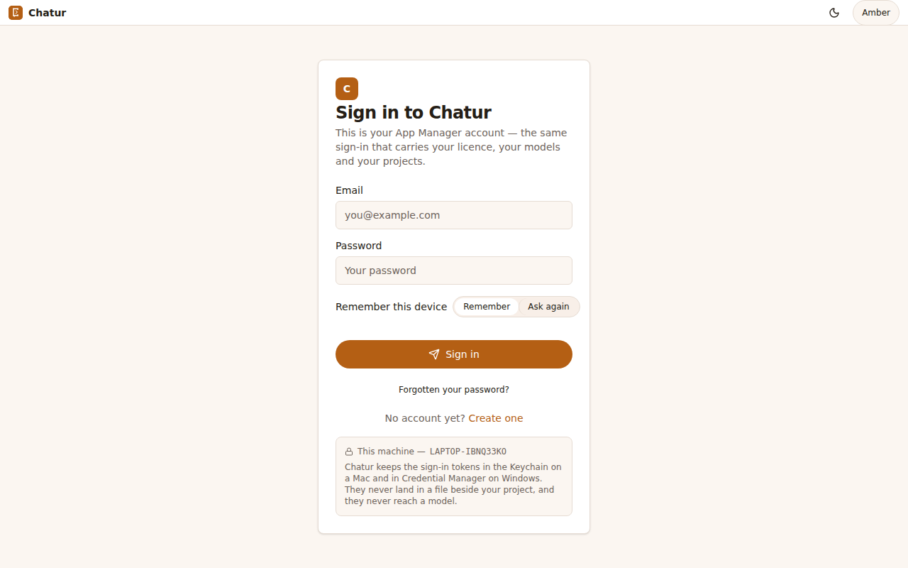
Call chain: SignIn.razor.cs:HandleSignInAsync → AccountActions.SignInAsync → AppManagerClient.DeviceLoginAsync → POST AuthSvc/device-login, then the secret store and table Installation
The page uses BareLayout, so no sign-in check runs here. The form at SignIn.razor:25 submits to HandleSignInAsync. The action reads this machine's device id (created once, table Installation), fetches App Manager's public key, encrypts the password and posts it. On success it saves the session to the secret store when "remember" is ticked, sets AppState.CurrentUser and the page goes to /start.
On refusal the page shows App Manager's own message in objErrorMessage. Any exception inside the action is caught at AccountActions.cs:90, logged, and returned as "Could not reach App Manager". An empty AppManager:BaseUrl ends there too, so check the log file before the network. "Forgotten your password?" (SignIn.razor.cs:68) only shows a toast; it calls nothing.
| File and line | Function | Watch | Expected value |
|---|---|---|---|
src/ChaturUI/Pages/SignIn.razor.cs:48 | HandleSignInAsync | vResult.Succeeded | true; the next line goes to /start |
src/Chatur.Core/Accounts/AccountActions.cs:69 | SignInAsync | vDeviceId | 32 hex characters, the same on every run |
src/Chatur.Core/Accounts/AccountActions.cs:74 | SignInAsync | vResult.Success, vResult.ErrorMessage | true and null; a wrong password gives false and the server's text |
src/Chatur.Core/Accounts/AppManagerClient.cs:121 | PostAuthAsync | vResponse.StatusCode, vEnvelope.Message | 200 and an envelope whose Data holds both tokens |
src/Chatur.Core/Accounts/AccountActions.cs:254 | PersistSessionAsync | aRemember | true; six AppManager.* names are then saved |
Calculations on this screen: none. AccountActions.EncryptPassword (AccountActions.cs:289) encrypts the password with the server's public key (RSA, OAEP SHA-256) before it leaves the machine.
Register (/register)#
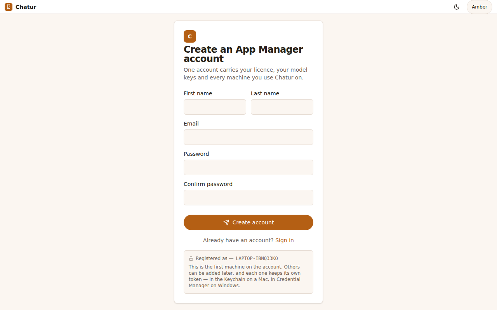
Call chain: Register.razor.cs:HandleSubmitAsync → AccountActions.RegisterAsync → AppManagerClient.DeviceRegisterAsync → POST AuthSvc/device-register, then the secret store
The page also uses BareLayout. "Create account" (Register.razor:95) runs HandleSubmitAsync. It checks the password rule first and stops without sending when the rule fails, then checks that both password boxes match. Only then does it build a RegisterRequest and call the action.
RegisterAsync checks the same rule again, so a caller that skips the page still gets a refusal. It uses the same device id, public key and encryption as sign-in. On success it always saves the session (aRemember: true at AccountActions.cs:137) and the page goes to /start.
One thing to know when debugging: the page sets objEmailInUse = true on every refusal (Register.razor.cs:89), including "Could not reach App Manager". The email box is marked even when the email was not the problem.
| File and line | Function | Watch | Expected value |
|---|---|---|---|
src/ChaturUI/Pages/Register.razor.cs:60 | HandleSubmitAsync | PasswordRule.Evaluate(objPassword).MeetsRule | true; false sets objPasswordInvalid and returns |
src/ChaturUI/Pages/Register.razor.cs:78 | HandleSubmitAsync | vResult.Succeeded, vResult.ErrorMessage | true and null |
src/Chatur.Core/Accounts/PasswordRule.cs:23 | Evaluate | vHasLength, vHasCapital, vHasNumber, vHasSpecial | all true for a password the server accepts |
src/Chatur.Core/Accounts/AccountActions.cs:124 | RegisterAsync | vResult.Success, vResult.UserId | true and a number |
src/Chatur.Core/Accounts/AppManagerClient.cs:92 | DeviceRegisterAsync | vBody | email, encryptedPassword, firstName, lastName, deviceInfo; applicationId only when no API key header is set |
Calculations on this screen: RuleMetCount (Register.razor.cs:36) counts how many of the four rule parts are met, for the live list under the password box. PasswordsMatch (:41) is true when the confirm box is not empty and equals the password. PasswordRule.Evaluate works out the four parts: eight or more characters, a capital, a digit, and one character from SpecialCharacters (PasswordRule.cs:13).
Start window (/start)#
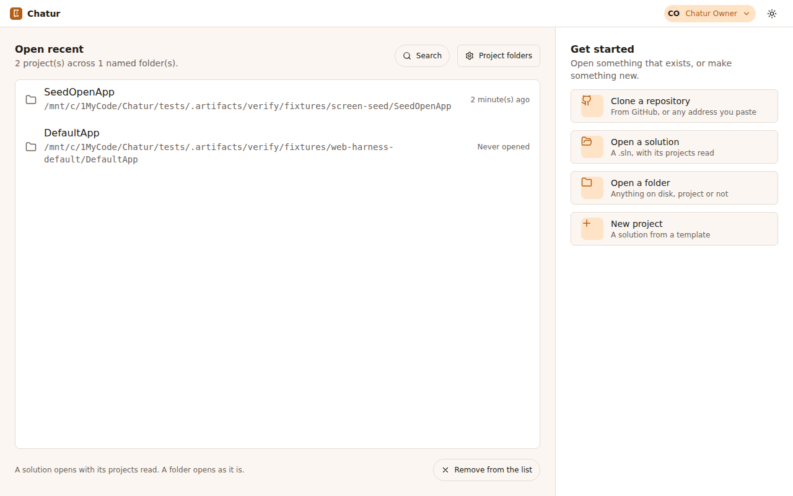
Call chain: Start.razor.cs:OpenProjectAsync → ProjectActions.SelectProjectAsync → tables Project (LastOpenedUtc) and Setting (key SelectedProjectId)
StartLayout wraps the page in AuthGate, so a person who is not signed in is sent to /sign-in. On load the page asks which project was selected last. If there is one, it goes straight to / unless the address carries ?all=1. Otherwise ReloadAsync lists the named folders and scans them.
ScanAsync looks one level into each named folder. A sub-folder with a .sln file becomes a project of kind Solution whose Path is the .sln file itself; any other sub-folder becomes kind Folder. New ones are inserted into Project; rows with RemovedUtc set are left out of the list.
"Project folders" opens ProjectFoldersDialog, which calls AddFolderAsync and RemoveFolderAsync. Clone, Open a solution, Open a folder and Open a file open Shell/OpenProjectDialog, which calls ProjectOpenActions and then goes to /. New project (way-new-project on the empty start, new-project under Get started) opens the same OpenProjectDialog in NewProject mode, which draws NewProjectDialog (Main window, below). The remove button on a row calls ForgetProjectAsync, which sets RemovedUtc and deletes nothing on disk.
| File and line | Function | Watch | Expected value |
|---|---|---|---|
src/ChaturUI/Pages/Start.razor.cs:65 | OnInitializedAsync | vSelectedProject, ShowAll | null on a first run; otherwise the page leaves for / |
src/ChaturUI/Pages/Start.razor.cs:86 | ReloadAsync | objProjects.Count | the number of rows drawn in the list |
src/Chatur.Core/Projects/ProjectActions.cs:178 | ScanAsync | vCandidate | name, path and kind of one sub-folder |
src/Chatur.Core/Projects/ProjectActions.cs:331 | SelectProjectAsync | vRow | the Project row; null throws InvalidOperationException |
src/Chatur.Core/Projects/ProjectActions.cs:364 | SelectProjectAsync | objAppState.SelectedProject | the chosen project with the new LastOpenedUtc |
Calculations on this screen: FormatWhen (Start.razor.cs:138) turns the last-opened time into "just now", minutes, hours or days ago, or a date after 30 days. VisibleProjects (:37) filters the list by the search text against name and path. ProjectActions.FindCandidates (ProjectActions.cs:222) decides the kind of each sub-folder.
Main window (/)#
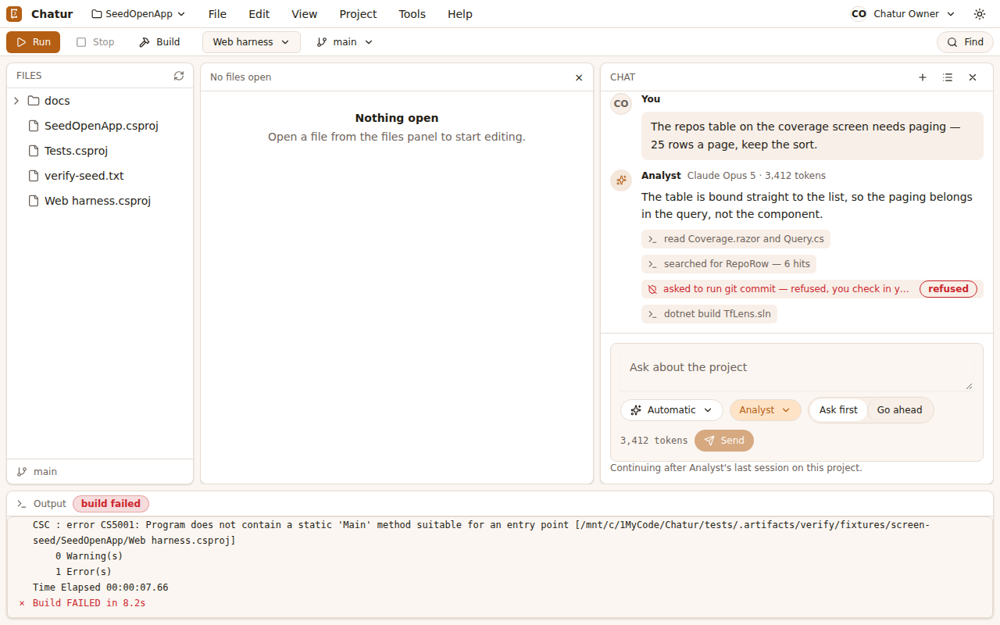
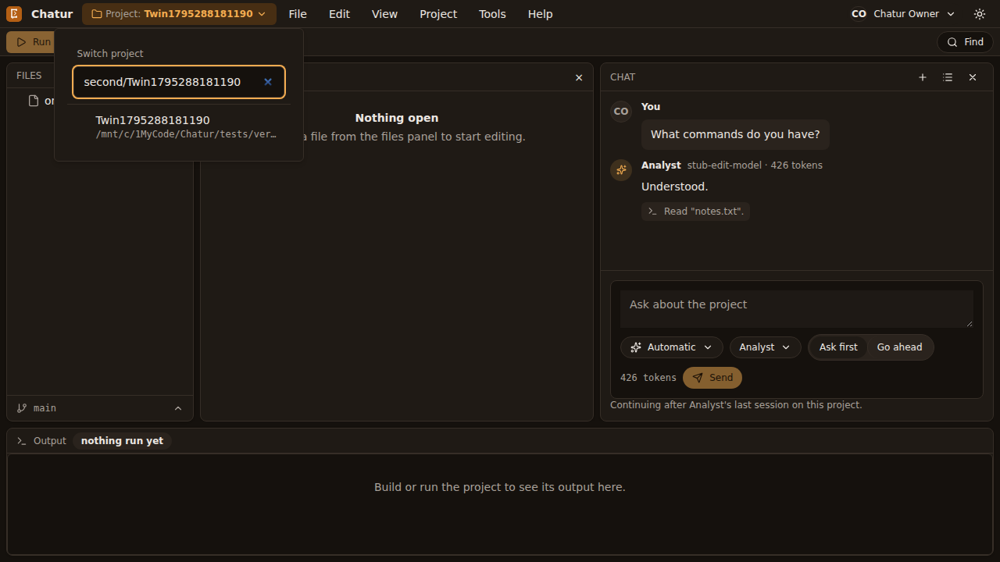
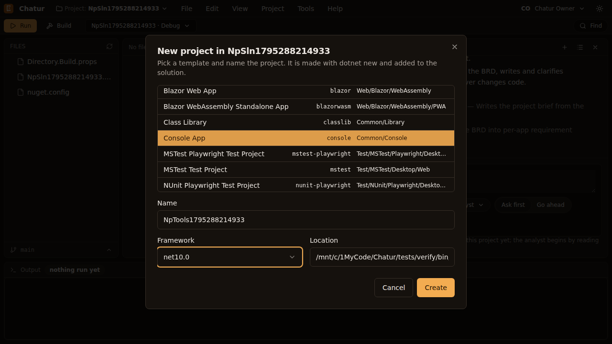
Call chain: ConversationPanel.razor.cs:SendMessageAsync → AgentActions.SendAsync → tables SessionEvent, Session and Change
This is the Workbench. Pages/Workbench.razor holds only FilesPanel, EditorArea and ConversationPanel. Layouts/MainLayout.razor adds MenuBar (line 85), AppToolbar (86), the sign-in check (87) and OutputStrip (95). The parts do not call each other. They share WorkbenchState (Shell/WorkbenchState.cs), which holds open tabs, the active tab, which parts are visible, the run targets and the busy flag, and raises Changed.
What each part does:
MenuBar: menus, the project switcher (aPopover: "Project:" and the name, every project with its path, a filter from eight on, rows drawn as they scroll in), account menu, Ctrl+, shortcut.NewProjectDialog: New project in every state. In a solutionCreateProjectAsyncadds; otherwiseProjectTemplateActions.CreateSolutionAsync(:124) makes the solution and first project.AppToolbar.StartLookingForTargets(:81) re-reads empty targets.- Commands:
AgentActions.SendAsync(:259) hands a*commandtoAgentCommandRunner.TryRunAsync(:78) first. Replies:MarkdownHtml.ReplyinProse. AppToolbar: branch name and switch, run target, Build, Run, Stop.FilesPanel: file tree fromFileActions.TreeAsync; a click reads the file and opens a tab.EditorArea: tabs and the editor; save writes throughFileActions.SaveAsync.ConversationPanel: sessions, messages, agent and model pick, proposed changes.OutputStrip: build and run lines, with a list of compiler errors that open the file.
Workbench.razor.cs:45 listens to AppState.Changed and calls WorkbenchTabs.Reset() when the project id changes, so tabs from the old project close. The agent loop and the output stream are described under Cross-cutting flows.
| File and line | Function | Watch | Expected value |
|---|---|---|---|
src/ChaturUI/Shell/MenuBar.razor.cs:411 | SwitchToAsync | aProjectId, objSwitcherOpen | the id picked in the switcher; false after the pick |
src/ChaturUI/Shell/MenuBar.razor.cs:301 | SwitcherProjects | objSwitcherFilter, .Count | the filter's text; every project whose name or path holds it |
src/ChaturUI/Shell/AppToolbar.razor.cs:164 | BuildAsync | objSelectedTarget.RunTargetId, Workbench.IsBuildRunBusy | the chosen target; true |
src/ChaturUI/Shell/FilesPanel.razor.cs:121 | OnSelectedPathChangedAsync | aPath, vContent | a path with forward slashes, relative to the project; the file's text |
src/ChaturUI/Shell/EditorArea.razor.cs:87 | SaveActiveAsync | vFile.RelativePath, vFile.IsDirty | the open file; true before, false after MarkSaved |
src/ChaturUI/Shell/ConversationPanel.razor.cs:785 | SendMessageAsync | vChunk.TextDelta, vChunk.IsFinal | text pieces; the last has a model name ("Chatur (no model)" for a command) |
src/ChaturUI/Shell/NewProjectDialog.razor.cs:191 | CreateAsync | InSolution | false with no solution open |
src/ChaturUI/Shell/OutputStrip.razor.cs:147 | UpdateStatus | objStatusText | "building", "running", "testing", "build passed", "build failed", "ended, exit code 0", "failed, exit code N" or "stopped" |
Calculations on this screen: OutputStrip.ParseError (OutputStrip.razor.cs:184) turns a compiler error line into file, line number and message. ConversationPanel.LoadTotalTokensAsync (:494) sums the tokens of every recorded event in the session. MenuBar.LoadRecentAsync (MenuBar.razor.cs:196) picks the five most recently opened projects.
Prerequisites (/prerequisites)#
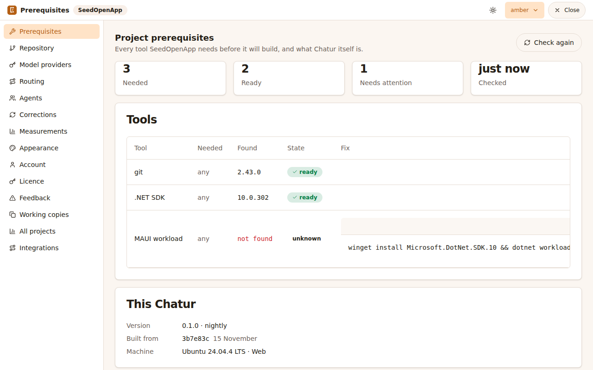
Call chain: Prerequisites.razor.cs:LoadAsync → PrerequisiteActions.ProbeAsync → ProcessCommandRunner.RunAsync (one version command per tool); table Project gives the folder
The page does three reads in LoadAsync. First the tools: with a project selected, ResolveProjectCatalogAsync reads the project's folder and looks at what is in it to decide which tools to list; with none, it uses ToolProbeCatalog.Default. Each tool's version command is run. A command that does not start is Missing and gets a fix command to copy (the Mac one on macOS, the Windows one elsewhere). A command that starts but prints no version that can be read is Unknown.
Second, Chatur's own version and commit, read from the Chatur.Core assembly's attributes. Third, after the page is already drawn, the newer-build check: GitHubReleaseClient.LatestReleaseAsync asks the release feed (15 second limit, set in ServiceCollectionExtensions.cs:84) and NightlyRelease.EvaluateOffer decides whether to offer it. A feed that fails or answers 404 gives no offer and one log line.
"Check again" runs LoadAsync again. Help ▸ About Chatur in the main window shows the same version and commit.
| File and line | Function | Watch | Expected value |
|---|---|---|---|
src/ChaturUI/Pages/Prerequisites.razor.cs:47 | LoadAsync | objTools | a list; null shows the empty state |
src/Chatur.Core/Prerequisites/PrerequisiteActions.cs:56 | ProbeAsync | vResult.Started, vResult.StandardOutput | true and the tool's version text |
src/Chatur.Core/Prerequisites/PrerequisiteActions.cs:101 | ResolveProjectCatalogAsync | vSignals | what was found in the project folder |
src/Chatur.Core/Prerequisites/PrerequisiteActions.cs:239 | ReadOwnBuildInfo | vVersion, vCommit | for example 0.1.0-nightly and a commit; unknown when the build did not stamp one |
src/Chatur.Core/Prerequisites/GitHubReleaseClient.cs:36 | LatestReleaseAsync | vResponse.StatusCode | 200 |
src/Chatur.Core/Prerequisites/NightlyRelease.cs:74 | EvaluateOffer | vIsNewerVersion, vIsSameVersionNewerCommit | both false means no offer |
Calculations on this screen: ReadyCount and AttentionCount (Prerequisites.razor.cs:24, :26) count ready tools and the rest. DisplayVersion (:112) splits 0.1.0-nightly into "0.1.0 · nightly". ShortCommit (:118) keeps seven characters. NightlyRelease.EvaluateOffer offers a build when its version is higher, or when the version is equal, the commit differs and it was published after this build was made.
Repository (/repository)#
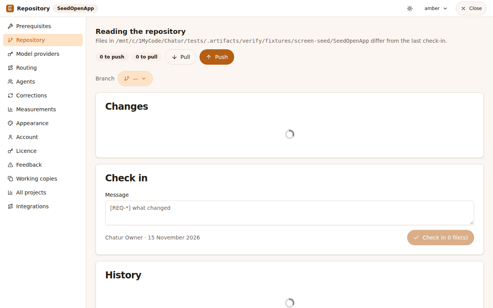
Call chain: Repository.razor.cs:CheckInChosenAsync → SourceControlActions.CheckInAsync → SourceControlActions.RunGitAsync (git add, git commit in the project folder; table Project gives the folder)
Every read and write on this page is a git process started by RunGitAsync (SourceControlActions.cs:573). Nothing about the repository is kept in Chatur's database. ResolveWorkingDirectoryAsync (:433) reads Project.Path and, when that is a .sln file, uses its folder.
LoadAsync first asks IsRepositoryAsync. A folder without a repository shows a plain message and stops. Otherwise four reads start side by side: changed files, branch status, branch list and history. The first changed file's difference is shown at once.
StatusAsync runs git fetch --quiet before it counts, so the page needs the network to show true ahead and behind numbers, and is slow when the remote is slow. A repository with no upstream gives 0 and 0.
Check in is enabled by CanCheckIn: a project, not busy, at least one chosen file and a message. Push and Pull run plain git push and git pull and then read the status again. A failed git command throws from EnsureSuccess with git's own error text, which the page shows in a toast.
| File and line | Function | Watch | Expected value |
|---|---|---|---|
src/ChaturUI/Pages/Repository.razor.cs:82 | LoadAsync | objIsRepository | true |
src/ChaturUI/Pages/Repository.razor.cs:96 | LoadAsync | objChanges.Count | the number of changed files |
src/ChaturUI/Pages/Repository.razor.cs:295 | CheckInChosenAsync | vPaths, objCheckInMessage | the chosen paths; a message that is not empty |
src/Chatur.Core/SourceControl/SourceControlActions.cs:146 | CheckInAsync | vCommitResult.ExitCode | 0 |
src/Chatur.Core/SourceControl/SourceControlActions.cs:191 | StatusAsync | vParts | two numbers: behind first, then ahead |
src/Chatur.Core/SourceControl/SourceControlActions.cs:593 | RunGitAsync | aArguments, vProcess.ExitCode | the git arguments; 0 |
Calculations on this screen: SourceControlActions.ChangesAsync (:58) works out lines added and removed per file from git diff HEAD --numstat; a new file counts all its lines as added. StatusAsync (:172) works out ahead and behind. On the page, CanCheckIn (Repository.razor.cs:46), NumberOf (:179, :199), RequirementRange (:214) and FormatWhen (:223) shape what is shown.
Settings ▸ Model providers (/settings/providers)#
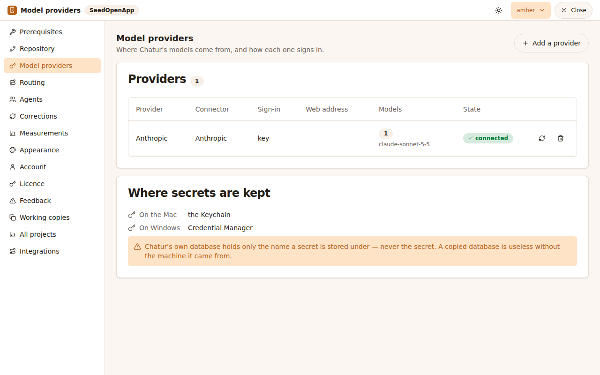
Call chain: SettingsProviders.razor.cs:TestAsync → ProviderActions.TestAsync → TechieRagConnectionProbe.ProbeAsync → table Provider (State)
The page lists rows from Provider and their models from Model. Test reads the provider's key from the secret store by SecretName, calls the service once and writes Connected or Failed back to Provider.State. A provider signed in through the browser is not called: it passes when a stored session exists. Remove deletes the provider's Model rows, the Provider row and then the secret.
The "Add a provider" button opens AddProviderDialog. Its own chain is AddProviderDialog.razor.cs:AddAsync → ProviderActions.AddWithKeyAsync, AddLocalAsync or AddSubscriptionAsync → tables Provider and Model. Which one runs depends on the sign-in choice: pasted key, no sign-in (a local service), or the browser. For a pasted key the row is inserted first, the key is saved in the secret store as chatur.provider.{id}, and only that name is written to the row. The key itself never goes into the database. For an OpenAI-compatible service the model list is read from the service before anything is saved; if that read fails, nothing is added. The dialog's Test button calls TestUnsavedAsync, which probes without saving.
| File and line | Function | Watch | Expected value |
|---|---|---|---|
src/ChaturUI/Pages/Settings/SettingsProviders.razor.cs:29 | LoadAsync | objProviders, objModels | lists; null shows "no providers yet" |
src/ChaturUI/Pages/Settings/SettingsProviders.razor.cs:51 | TestAsync | vResult.Succeeded, vResult.Message | true and null |
src/Chatur.Core/Models/ProviderActions.cs:250 | TestAsync | vRow.SignInMethod, vSecret | the row's method; a key that is not empty |
src/Chatur.Core/Models/TechieRagConnectionProbe.cs:71 | ProbeAsync | vLlm.ModelName | the connector's default model |
src/ChaturUI/Pages/Settings/AddProviderDialog.razor.cs:217 | AddAsync | SignIn, objConnector | key, browser or none; the connector chosen |
src/Chatur.Core/Models/ProviderActions.cs:108 | AddWithKeyAsync | vSecretName | chatur.provider. followed by the new id |
Calculations on this screen: NamesOf (SettingsProviders.razor.cs:90) shows the first three model names and "+N more". ModelsOf (:41) picks one provider's models. In the dialog, MinutesLeft (AddProviderDialog.razor.cs:118) works out how long the browser sign-in code is still good for.
Settings ▸ Routing (/settings/routing)#
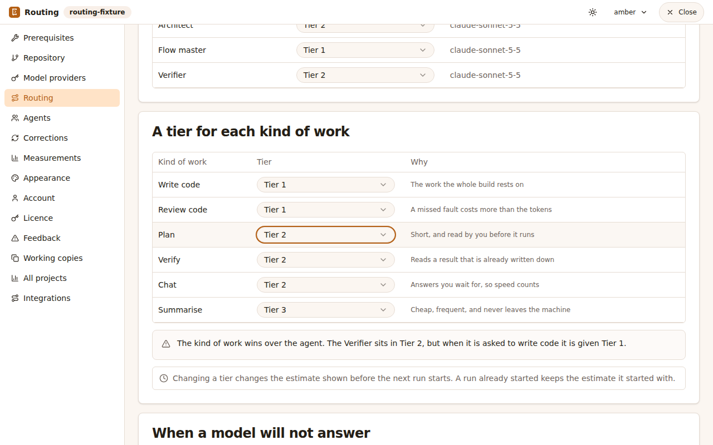
Call chain: SettingsRouting.razor.cs:WriteChainAsync → RoutingActions.ReorderChainAsync → table RoutingSetting (keys Tier1Chain, Tier2Chain, Tier3Chain)
Routing decides which model answers. There are three tiers. Each tier has an ordered list of model ids, stored as a JSON array in one RoutingSetting row. Add, remove and move on the page all build a new list in memory and send the whole list through WriteChainAsync. The action refuses a list that names a model id not in Model.
On load the page calls EnsureShippedTiersAsync. The first time there are models and no TiersInitialised row, it fills the three lists from each model's own Tier and marks it done. "Reset" does the same at any time.
Other controls on the page:
- A tier for each agent writes
Role.Tier(SetRoleTierAsync). The Agents page edits the same column. - A tier for each kind of work writes
RoutingEntry(SetWorkTierAsync). The six kinds and their starting tiers are theWorkKindslist atSettingsRouting.razor.cs:16. - The number of failed fixes before work moves up a tier writes
RoutingSettingkeyEscalationThreshold. The seed value is 3 (0002-SeedRoles.sql:48). - The automatic routing switch writes
RoutingSettingkeyAutoRouting.
Every change is saved at once; there is no Save button. AgentActions.BuildFallbackChainAsync reads these lists when a message is sent.
| File and line | Function | Watch | Expected value |
|---|---|---|---|
src/ChaturUI/Pages/Settings/SettingsRouting.razor.cs:67 | LoadAsync | objTiers | three items, each with ModelIdsInOrder |
src/ChaturUI/Pages/Settings/SettingsRouting.razor.cs:124 | MoveAsync | vChain | the same ids with two neighbours swapped |
src/Chatur.Core/Routing/RoutingActions.cs:88 | ReorderChainAsync | vFound | equal to aModelIdsInOrder.Count; otherwise ArgumentException |
src/Chatur.Core/Routing/RoutingActions.cs:94 | ReorderChainAsync | vJson | a JSON array of ids such as [3,1] |
src/Chatur.Core/Routing/RoutingActions.cs:60 | SetRoleTierAsync | vAffected | 1 |
Calculations on this screen: FirstModelOf (SettingsRouting.razor.cs:81) names the first model of an agent's tier, or a dash when the list is empty. AvailableModels (:89) is every model not already in a tier's list. CountText (:190) writes "1 model" or "N models".
Settings ▸ Agents (/settings/agents)#
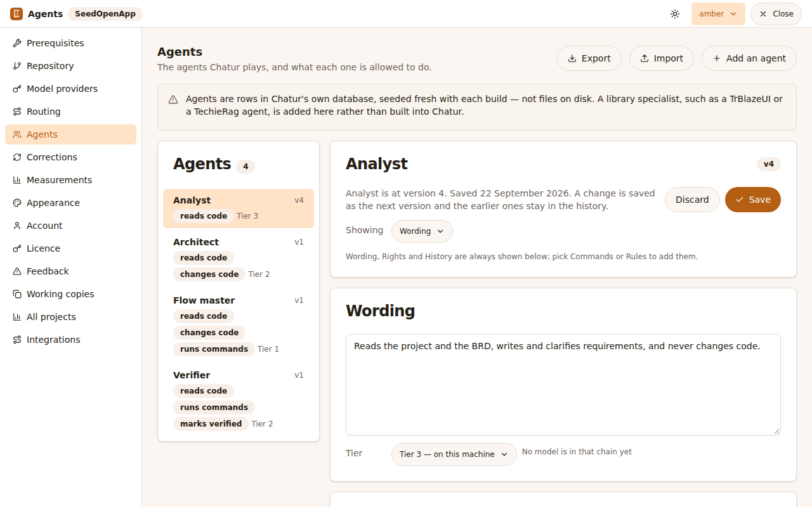
Call chain: SettingsAgents.razor.cs:SaveAsync → RoleActions.SaveAsync → tables Role, RoleCommand, Rule and RoleVersionHistory
In the code an agent is a role. The page loads every role, then the detail of each one (ReloadAsync), and selects the first. The detail holds the wording, the rights, the commands, the rules and the version history. Editing fills four draft fields; nothing is written until Save.
SaveAsync splits the commands and rules boxes into lines and calls the action. The action refuses wording shorter than 40 characters. It then raises Role.Version by one, replaces the role's RoleCommand rows, replaces the Rule rows whose Scope is the role's code, and adds a RoleVersionHistory row. These statements run one after another with no transaction (RoleActions.cs:262 to :293), so a failure part-way leaves the earlier ones in place. If the tier draft changed, a second call (SetTierAsync) writes Role.Tier.
Restore in the history list saves an old version's wording as the next version; it does not go back. "Add an agent" opens AddAgentDialog, which calls RoleActions.AddAsync with tier 2 and the right to read files, plus edit and build when ticked. Export downloads RoleActions.ExportAsync as a JSON file; import reads a chosen file and calls ImportAsync.
| File and line | Function | Watch | Expected value |
|---|---|---|---|
src/ChaturUI/Pages/Settings/SettingsAgents.razor.cs:75 | ReloadAsync | objDetails.Count | one entry per role |
src/ChaturUI/Pages/Settings/SettingsAgents.razor.cs:116 | SaveAsync | objWordingDraft, vCommands, vRules | the text in the three boxes |
src/Chatur.Core/Roles/RoleActions.cs:241 | SaveAsync | aWording.Length | 40 or more; less throws ArgumentException |
src/Chatur.Core/Roles/RoleActions.cs:259 | SaveAsync | vNewVersion | the current version plus one |
src/ChaturUI/Pages/Settings/AddAgentDialog.razor.cs:60 | AddAsync | vActions | read-file, plus edit-file and run-build when ticked |
Calculations on this screen: VersionOf (SettingsAgents.razor.cs:249) takes the highest version in a role's history. PillsOf (:253) turns rights into the labels "reads code", "changes code", "runs commands" and "marks verified". SavedLine (:290) builds the sentence about the current version and when it was saved.
Settings ▸ Corrections (/settings/corrections)#
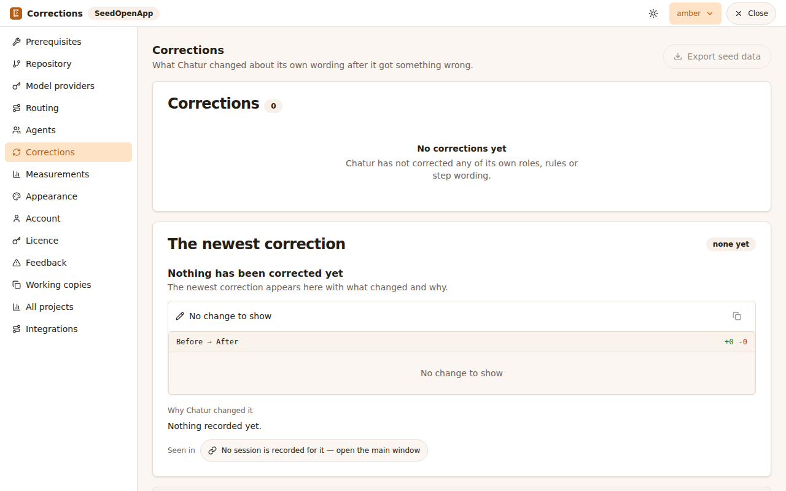
Call chain: SettingsCorrections.razor.cs:UndoAsync → CorrectionActions.UndoAsync → table Correction, then Rule, ProcessStepText, or Role with RoleVersionHistory
A correction is a change an agent made to wording: an agent's own wording, a rule, or a process step's text. Rows are not created on this page. They come from the agent tool CorrectWording (AgentActions.cs:1098), which calls CorrectionActions.CorrectWordingAsync (CorrectionActions.cs:52). That method changes the wording and inserts the Correction row with the text before and after and the reason.
The page lists them newest first and shows the difference for the chosen one. SelectedCorrection falls back to the first row when nothing is chosen.
- Keep sets
StatustoKept. - Undo sets
StatustoUndoneand puts theBeforetext back. TheTargetdecides where:rule:plus an id updatesRule,step:updatesProcessStepText, anything else is a role code and writes a new role version. WhenBeforeis empty only the status changes. - "Export seed data" downloads every kept correction as JSON.
- "Copy" puts the changed lines on the clipboard, each with a leading plus or minus.
The catch (NotImplementedException) blocks on this page are left from an earlier build; the three actions are built.
| File and line | Function | Watch | Expected value |
|---|---|---|---|
src/ChaturUI/Pages/Settings/SettingsCorrections.razor.cs:24 | LoadAsync | objCorrections | every row, newest first |
src/ChaturUI/Pages/Settings/SettingsCorrections.razor.cs:45 | UndoAsync | aCorrection.CorrectionId, aCorrection.Target | the row clicked |
src/Chatur.Core/Corrections/CorrectionActions.cs:218 | UndoAsync | vCorrection.Target, vCorrection.Before | rule: and an id, step: and a code, or a role code; the earlier text |
src/Chatur.Core/Corrections/CorrectionActions.cs:186 | KeepAsync | vAffected | 1; 0 throws KeyNotFoundException |
src/Chatur.Core/Corrections/CorrectionActions.cs:287 | ExportSeedAsync | vKept.Count | the number of rows with Status Kept |
Calculations on this screen: CopyDiffAsync (SettingsCorrections.razor.cs:70) compares before and after with TextDiff.Compare and keeps only added and removed lines. KindOf (:91) reads the kind from the start of Target.
Settings ▸ Measurements (/settings/measurements)#
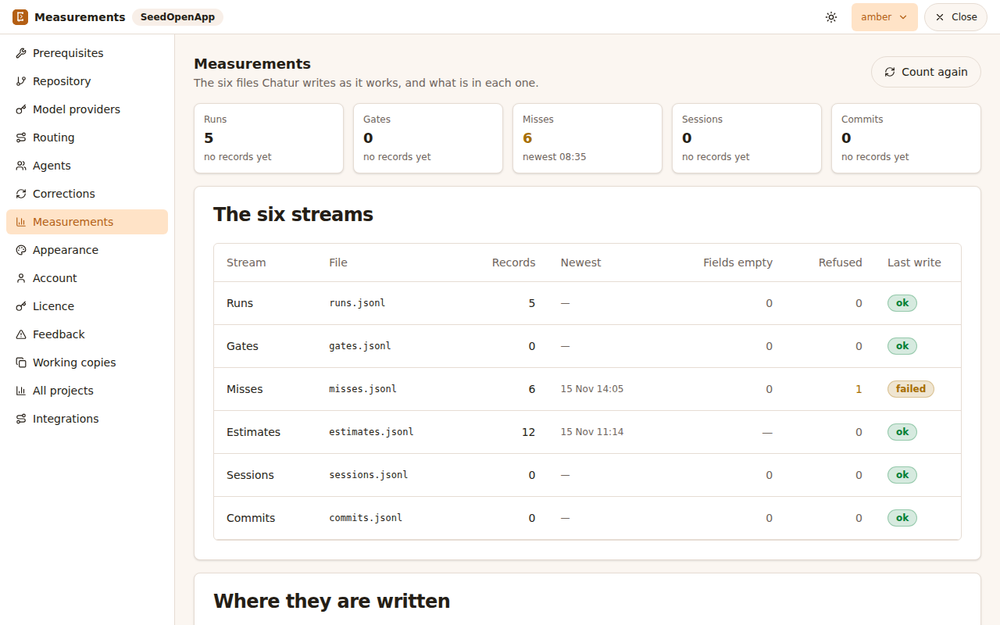
Call chain: SettingsMeasurements.razor.cs:LoadAsync → MeasurementActions.StreamsAsync → files docs/metrics/*.jsonl in the project folder and table RefusedWrite
The numbers on this page are not in Chatur's database. They are counted from six files in the selected project's docs/metrics folder: runs.jsonl, gates.jsonl, misses.jsonl, estimates.jsonl, sessions.jsonl and commits.jsonl (MeasurementActions.cs:18). Each line of a file is one record. With no project selected the page shows nothing.
For each file StreamsAsync counts the lines, counts fields that are null or empty, and finds the newest date. It then reads RefusedWrite for that project and file. A write is refused when a record fails MeasurementSchema.TryValidate or the file cannot be written; AppendAsync (:196) records the reason there instead of throwing. FolderAsync gives the folder path and the last line of runs.jsonl, indented for reading.
The lower panel lists other project folders used for estimates. It calls EstimateActions.SistersAsync, AddSisterAsync and RemoveSisterAsync against table SisterProject. A refused folder shows the action's own reason.
Watch one thing: StreamsAsync, FolderAsync and AppendAsync join Project.Path with docs/metrics as it is. For a project of kind Solution that path is the .sln file (ProjectActions.cs:259), and these methods do not take its folder the way FileActions.cs:63 does. If counts are all zero for a solution, look at vFilePath first.
| File and line | Function | Watch | Expected value |
|---|---|---|---|
src/ChaturUI/Pages/Settings/SettingsMeasurements.razor.cs:38 | LoadAsync | objStreams.Count | 6 |
src/Chatur.Core/Measurements/MeasurementActions.cs:63 | StreamsAsync | vFilePath | a real file under the project's docs/metrics |
src/Chatur.Core/Measurements/MeasurementActions.cs:94 | StreamsAsync | vLastWriteFailed | true only when the newest refused write is later than the newest record |
src/Chatur.Core/Measurements/MeasurementActions.cs:220 | AppendAsync | vRefusalReason | null for a record that is accepted |
src/Chatur.Core/Estimates/EstimateActions.cs:179 | SistersAsync | the returned list | one item per SisterProject row |
Calculations on this screen: StreamsAsync (MeasurementActions.cs:45) works out record count, empty-field count (CountEmptyFields, :145), newest date (TryReadAt, :165), refused-write count and whether the last write failed. On the page, SisterCountText (SettingsMeasurements.razor.cs:49) and FailedStreamsText (:100) build two short texts.
Settings ▸ Appearance (/settings/appearance)#
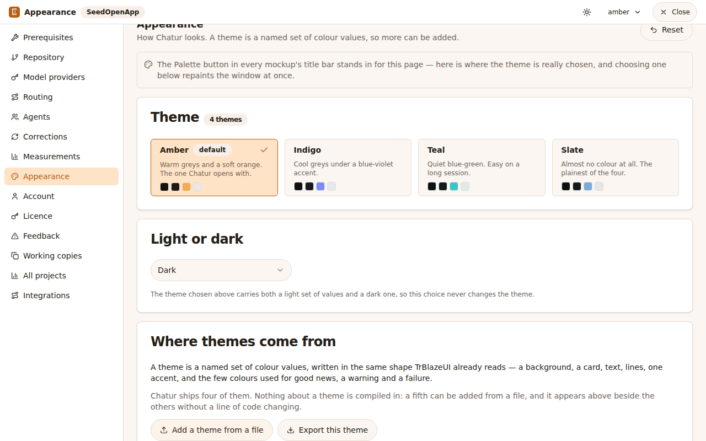
Call chain: SettingsAppearance.razor.cs:ChooseAsync → ThemeActions.ChooseAsync → table Theme (the name must exist) and table Setting (keys Appearance.ThemeName, Appearance.ThemeMode, Appearance.IsDark)
The page lists rows from Theme. Four ship with Chatur (amber, indigo, teal, slate); others have Source equal to file. Each row's Values column is JSON with a light and a dark set of colours.
Choosing a theme, changing the mode (light, dark, follow the system) and Reset all go through ThemeActions.ChooseAsync. It checks the name, writes the three Setting rows and calls AppState.SetTheme. The page itself paints nothing. Shell/ThemeHost, which sits in ChaturRoutes.razor:25 in every window, hears AppState.Changed and applies the theme through ThemeInterop. That is why every open window changes together.
"Add a theme from a file" takes a typed file path. AddFromFileAsync uses the file name as the theme name, checks the JSON shape, refuses a name that already exists and inserts the row. ArgumentException, InvalidOperationException and FileNotFoundException are shown in the dialog (objAddError); anything else is not caught here. Export downloads the chosen theme in the same shape.
| File and line | Function | Watch | Expected value |
|---|---|---|---|
src/ChaturUI/Pages/Settings/SettingsAppearance.razor.cs:81 | ChooseAsync | aThemeName, State.ThemeMode | the card clicked; the mode already in use |
src/Chatur.Core/Themes/ThemeActions.cs:77 | ChooseAsync | vExists | a theme id; null throws KeyNotFoundException |
src/Chatur.Core/Themes/ThemeActions.cs:89 | ChooseAsync | objAppState.ThemeName | the new name after this line |
src/ChaturUI/Shell/ThemeHost.razor.cs:86 | ApplyAsync | vTheme.Source, vIsDark | file takes the custom path; anything else calls SetThemeAsync |
src/Chatur.Core/Themes/ThemeActions.cs:106 | AddFromFileAsync | vName, vJson | a name made from the file name; JSON with both sets |
Calculations on this screen: SwatchColours (SettingsAppearance.razor.cs:50) picks four colours (background, card, accent, text) from the set for the mode now showing. ModeValue (:33) maps the mode to the radio value. AppState.IsDark (AppState.cs:30) is true for dark mode, or for follow-the-system when the system is dark.
Settings ▸ Account (/settings/account)#
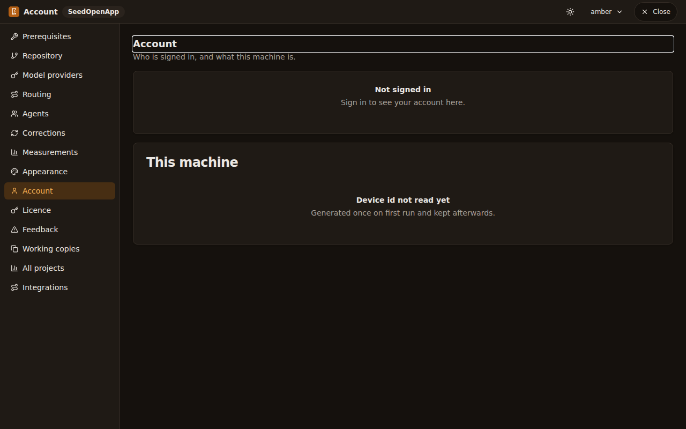
Call chain: SettingsAccount.razor.cs (an empty class, no method) → no action is called → no table is read
This page is not wired yet. It draws two fixed panels and nothing else. The first always says "Not signed in", and the second always says "Device id not read yet". Both are shown even though the person is signed in: SecondaryLayout wraps the page in AuthGate, so it cannot be reached without a user.
The data the page should show already exists. The signed-in user is AppState.CurrentUser (set by AccountActions.SignInAsync and CurrentUserAsync), and the device id comes from IAccountActions.DeviceIdAsync. The account menu in the main and start windows already shows the name and email from AppState. To wire the page, inject AppState and IAccountActions in the code-behind and replace the two Empty blocks.
Sign out is not on this page. It is in the account menu, Shell/AccountMenu.razor.cs:55.
| File and line | Function | Watch | Expected value |
|---|---|---|---|
src/ChaturUI/Pages/Settings/SettingsAccount.razor:14 | markup, no function | the Empty title | always "Not signed in" today |
src/ChaturUI/Pages/Settings/SettingsAccount.razor:22 | markup, no function | the Empty title | always "Device id not read yet" today |
src/ChaturUI/Layouts/AuthGate.razor.cs:36 | CheckAsync | vUser | the signed-in user; the page is drawn only when this is not null |
src/Chatur.Core/Accounts/AccountActions.cs:242 | DeviceIdAsync | the returned text | the device id; not called by this page today |
Calculations on this screen: none
All projects (/all-projects)#
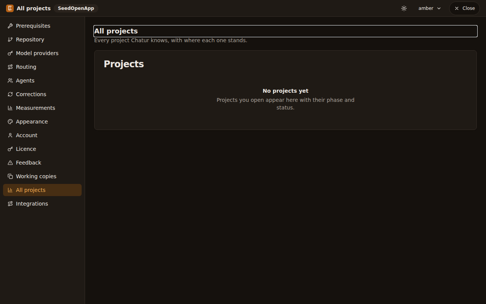
Call chain: AllProjects.razor (no code-behind file) → no action is called → no table is read
A fixed page for a later phase. It always shows "No projects yet", whatever is in table Project. The "All projects" item in the main window's project switcher does not come here; it goes to /start?all=1.
| File and line | Function | Watch | Expected value |
|---|---|---|---|
src/ChaturUI/Pages/AllProjects.razor:1 | route, no function | the address | /all-projects in the secondary window |
src/ChaturUI/Pages/AllProjects.razor:18 | markup, no function | the Empty title | always "No projects yet" |
src/ChaturUI/Layouts/SecondaryNavigation.cs:25 | Items | the item's Route | /all-projects |
Calculations on this screen: none
Working copies (/worktrees)#
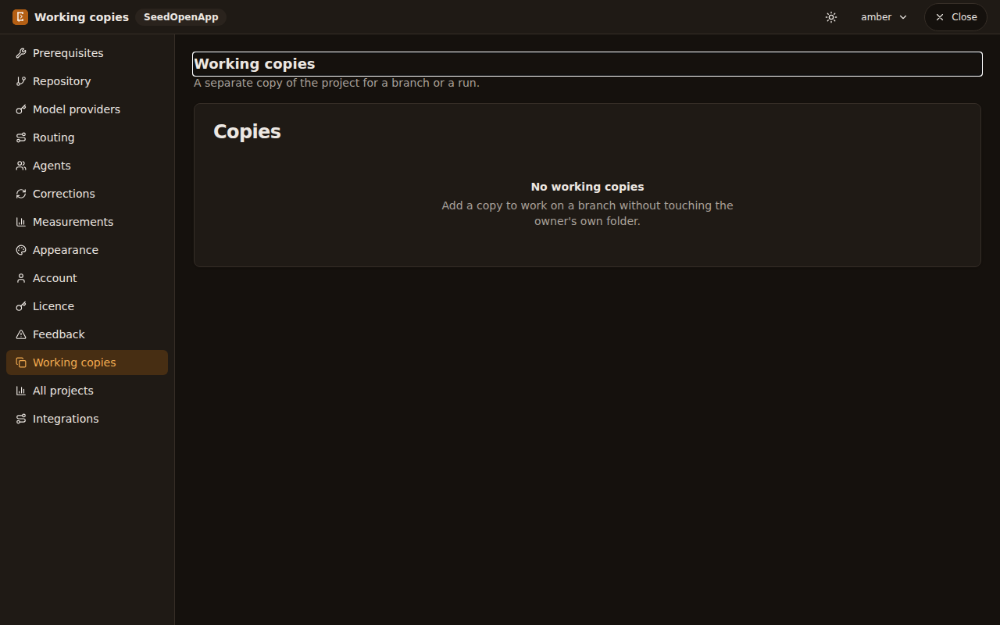
Call chain: Worktrees.razor (no code-behind file) → no action is called → no table is read
A fixed page for a later phase. It always shows "No working copies" and has no button to add one.
| File and line | Function | Watch | Expected value |
|---|---|---|---|
src/ChaturUI/Pages/Worktrees.razor:1 | route, no function | the address | /worktrees in the secondary window |
src/ChaturUI/Pages/Worktrees.razor:17 | markup, no function | the Empty title | always "No working copies" |
src/ChaturUI/Layouts/SecondaryNavigation.cs:24 | Items | the item's Route | /worktrees |
Calculations on this screen: none
Licence (/licence)#
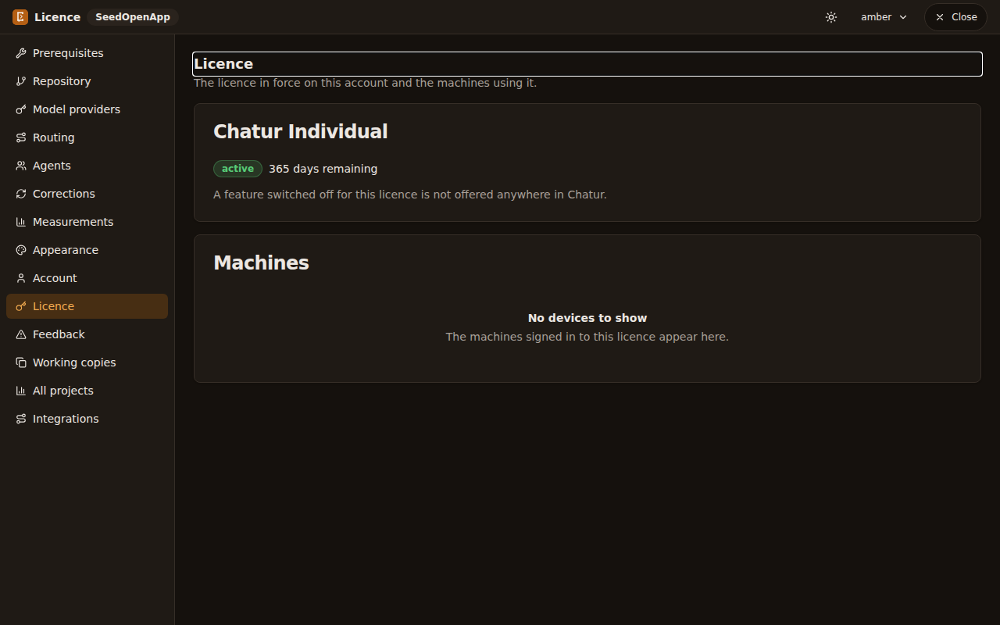
Call chain: Licence.razor (no code-behind file) → no action is called → no table is read
A fixed page for a later phase. The "active" badge and "365 days remaining" are text typed into the markup, not values read from App Manager. Do not treat them as a real licence state. The machines panel always shows "No devices to show".
| File and line | Function | Watch | Expected value |
|---|---|---|---|
src/ChaturUI/Pages/Licence.razor:19 | markup, no function | the badge text | always "active" |
src/ChaturUI/Pages/Licence.razor:20 | markup, no function | the days text | always "365 days remaining" |
src/ChaturUI/Pages/Licence.razor:31 | markup, no function | the Empty title | always "No devices to show" |
src/ChaturUI/Shell/AccountMenu.razor:21 | menu item | the route opened | /licence |
Calculations on this screen: none
Feedback (/feedback)#
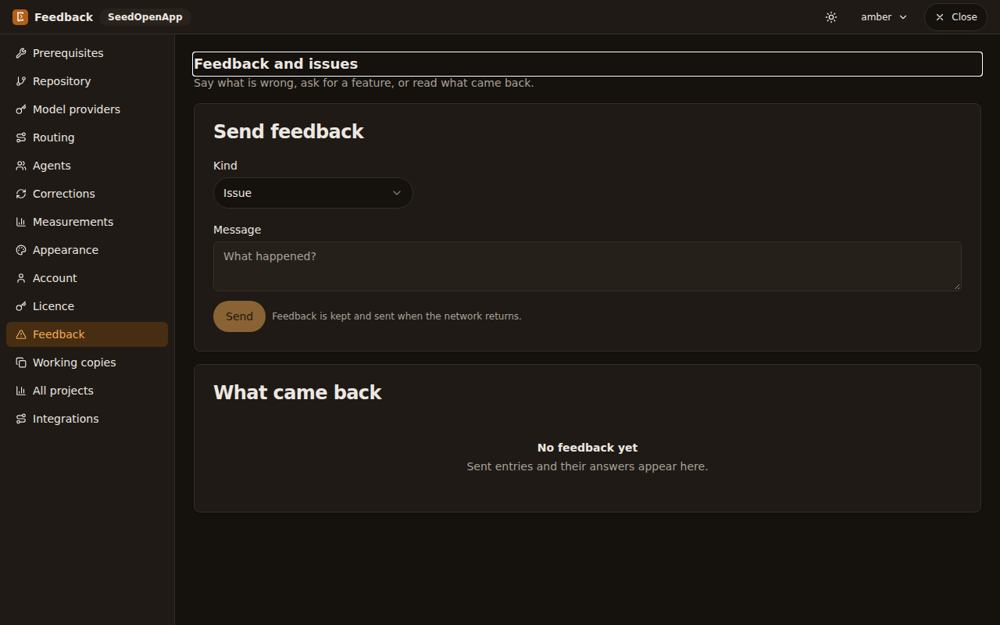
Call chain: Feedback.razor:SendAsync (in the page's own @code block) → ToastService.Success → nothing is stored and nothing is sent
The form works on screen only. Send is enabled when the message is not empty. SendAsync shows a toast that says the feedback is kept, then clears the box. The text is not written to the database or a file and is not posted to App Manager, so it is lost. The "What came back" panel always shows "No feedback yet". There is no .razor.cs file for this page.
| File and line | Function | Watch | Expected value |
|---|---|---|---|
src/ChaturUI/Pages/Feedback.razor:60 | CanSend | objMessage | text that is not empty |
src/ChaturUI/Pages/Feedback.razor:62 | SendAsync | objKind, objMessage | issue or idea; the typed text |
src/ChaturUI/Pages/Feedback.razor:70 | SendAsync | objMessage | empty after this line; the text is gone |
Calculations on this screen: none
Integrations (/integrations)#
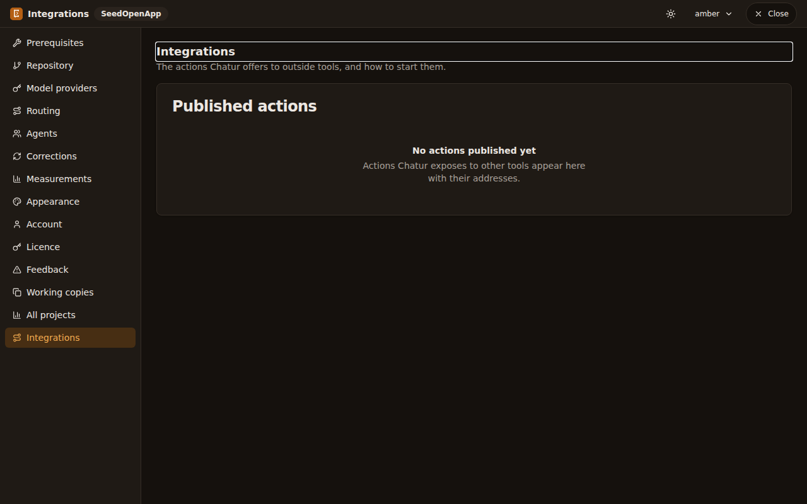
Call chain: Integrations.razor (no code-behind file) → no action is called → no table is read
A fixed page for a later phase. It always shows "No actions published yet".
| File and line | Function | Watch | Expected value |
|---|---|---|---|
src/ChaturUI/Pages/Integrations.razor:1 | route, no function | the address | /integrations in the secondary window |
src/ChaturUI/Pages/Integrations.razor:18 | markup, no function | the Empty title | always "No actions published yet" |
src/ChaturUI/Layouts/SecondaryNavigation.cs:26 | Items | the item's Route | /integrations |
Calculations on this screen: none
Measurements (/measurements)#
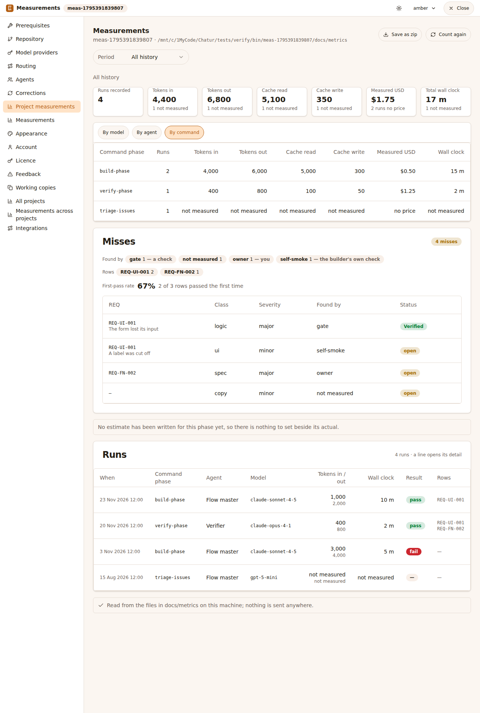
Call chain: Measurements.razor → Measurements.razor.cs:LoadAsync → IMetricsReportActions.ReportAsync (MetricsReportActions.cs:43) → MetricsCalculator.Compute (MetricsCalculator.cs:44) → the open project's docs/metrics/runs.jsonl, gates.jsonl and misses.jsonl; no table is read and nothing is sent anywhere
Opened from Project ▸ Measurements (MenuBar.razor:192) or the side list's "Project measurements" (SecondaryNavigation.cs:36).
| File and line | Function | Watch | Expected value |
|---|---|---|---|
src/ChaturUI/Pages/Measurements.razor.cs:130 | LoadAsync | objReport.Totals | the period's runs and four token kinds, null sums shown as "not measured" |
src/Chatur.Core/Measurements/MetricsReportActions.cs:166 | ComputeAsync | aPeriod | the picked period; records outside it are left out by ts |
src/Chatur.Core/Measurements/MetricsCalculator.cs:44 | Compute | the returned Misses.RowsFirstPass | rows whose first gate (attempt 1) was Verified |
src/ChaturUI/Pages/Measurements.razor.cs:203 | SaveZipAsync | objZip.Entries | docs/metrics/<file>.jsonl for each non-empty stream file |
src/Chatur.Core/Measurements/MetricsReportActions.cs:128 | ExportAsync | the ZipArchive entries | no manifest, entries named as TfLens imports them |
Calculations on this screen: every figure is summed by MetricsCalculator.Compute: four token kinds kept apart, cost only from cost_usd ("no price" when a run has none), wall clock from duration_s or the run's start and end, the first-pass rate as rows Verified at attempt 1 over rows graded. tests/unit/Chatur.Tests/Measurements/MetricsReportTests.cs re-adds a fixture by hand and compares.
Measurements across projects (/measurements/all)#
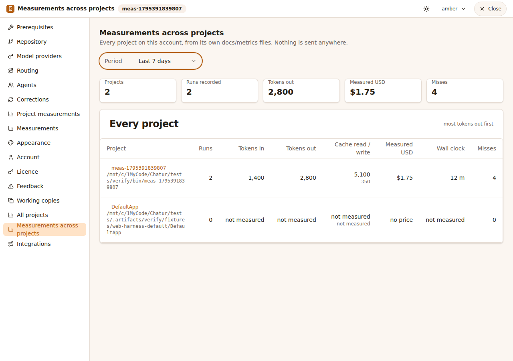
Call chain: MeasurementsAcrossProjects.razor → MeasurementsAcrossProjects.razor.cs:48 → IMetricsReportActions.AcrossProjectsAsync (MetricsReportActions.cs:74) → table Project for the account's projects → each project's docs/metrics files through MetricsCalculator.Compute
| File and line | Function | Watch | Expected value |
|---|---|---|---|
src/ChaturUI/Pages/MeasurementsAcrossProjects.razor.cs:52 | OnInitializedAsync | objAcross.Projects | one line per project, Last 7 days to begin with |
src/Chatur.Core/Measurements/MetricsReportActions.cs:74 | AcrossProjectsAsync | FolderFound of a line | false when the project's folder or docs/metrics is gone; its figures read "not measured" |
src/ChaturUI/Pages/MeasurementsAcrossProjects.razor.cs:65 | OpenProjectAsync | AppState.SelectedProject | the project whose name was clicked; the page then shows its Measurements |
Calculations on this screen: the same sums as Measurements, per project, then added across projects for the tiles.
Cross-cutting flows#
Windows#
Call chain: App.xaml.cs:CreateWindow → WindowService.CreateStartWindow → StartWindowPage (a BlazorWebView whose root is ChaturUI.ChaturRoutes)
The design has three windows: start, main and secondary. All three are made in src/Chatur/Services/WindowService.cs. Each window is a MAUI ContentPage under src/Chatur/Windows holding one BlazorWebView, and every web view loads the same ChaturRoutes router.
- Start window:
CreateStartWindow(line 18), called once fromApp.xaml.cs:26when the app starts. - Main window:
ShowMainWindow(line 22) makes a window fromMainWindowPage. Nothing insrccalls it today. When a project is opened,Start.razor.cs:68and:134navigate the start window's own web view to/, so the main window's content appears inside the first window. - Secondary window:
ShowSecondaryWindow(line 35). The pages reach it throughISecondaryWindow.Open, implemented byPlatform/MauiSecondaryWindow.cs:23, which moves the call to the main thread. If the window is already open,SecondaryWindowPage.NavigateTo(SecondaryWindowPage.xaml.cs:32) moves it to the new route and the window is brought forward.
AppState is a singleton, so all windows share it. Services registered as scoped, such as WorkbenchState and every action class, are separate per web view.
A closing window takes its page down first (21 Nov 2026, REQ-NFR-011): CloseSecondaryWindow (WindowService.cs:91) and the window's own close button (AppWindow.Closing, :63) call CloseSecondaryAsync (:103), which asks the page to draw nothing (SecondaryWindowPage.PrepareToCloseAsync, SecondaryWindowPage.xaml.cs:57; WindowLifetime.Close, WindowLifetime.cs:19; ChaturRoutes renders nothing), then closes the window; Destroying releases the web view (ReleaseWebView, :44, which marks the page gone for JsCleanUp.MarkGone, JsCleanUp.cs:28, and calls DisconnectHandler). Before, a closed window's components stayed subscribed to AppState and drew into a web view that had gone at every project switch. MauiProgram.IsClosedWebViewMessage (MauiProgram.cs:161) notes the web view bridge's own last failed message as one information line.
The installed app is built by scripts/install-windows.ps1: Release, win-x64, self-contained, unpackaged, into src/Chatur/bin/Release/install, copied to %LOCALAPPDATA%\\Programs\\Chatur with the Start menu entry Chatur.lnk. The App Manager values come from user secrets into src/Chatur/obj/install/appsettings.json, embedded through -p:ChaturSettingsFile (Chatur.csproj), and the file is deleted after the build.
| File and line | Function | Watch | Expected value |
|---|---|---|---|
src/Chatur/App.xaml.cs:26 | CreateWindow | the returned Window | a window whose page is StartWindowPage |
src/Chatur/Services/WindowService.cs:39 | ShowSecondaryWindow | aRoute, objSecondaryWindow | the route asked for; null the first time |
src/Chatur/Services/WindowService.cs:50 | ShowSecondaryWindow | aRoute | the new route when the window is already open |
src/Chatur/Windows/SecondaryWindowPage.xaml.cs:35 | NavigateTo | the result of TryDispatchAsync | true while the web view is alive |
Sign-in#
Call chain: AuthGate.razor.cs:CheckAsync → AccountActions.CurrentUserAsync → ISecretStore.ReadAsync (and AppManagerClient.RefreshAsync when the token has expired)
StartLayout, MainLayout and SecondaryLayout wrap their content in AuthGate. BareLayout (Sign in, Register) does not. AuthGate asks for the current user once when it is first drawn. No user means a move to /sign-in. An exception shows an error box with "Try again" and "Sign in again" instead of a blank window.
CurrentUserAsync returns AppState.CurrentUser when it is set. After a restart it is empty, so the method reads six values from the secret store. Their names are in Accounts/AccountSecretNames.cs. If any of the four it needs is missing, there is no user. If the stored expiry time has passed, it calls AuthSvc/refresh; a failed refresh clears the stored session and returns no user.
The App Manager client is a typed HttpClient set up in ServiceCollectionExtensions.cs:53. It takes AppManager:BaseUrl, and adds X-Api-Key and X-Api-Secret headers when those are configured. AppManagerDeviceIdHandler adds X-Device-Id to every call.
The secret store is ISecretStore, implemented by src/Chatur/Platform/MauiSecretStore.cs: Windows Credential Manager under the prefix Chatur:, and SecureStorage on Mac Catalyst. A test run uses its own prefix so it never replaces a real session.
Sign out is AccountMenu.razor.cs:55: AccountActions.SignOutAsync calls AuthSvc/logout, clears the six stored values even when that call fails, clears AppState.CurrentUser, and the menu then loads /sign-in with a forced reload.
| File and line | Function | Watch | Expected value |
|---|---|---|---|
src/ChaturUI/Layouts/AuthGate.razor.cs:36 | CheckAsync | vUser | the user; null sends the window to /sign-in |
src/Chatur.Core/Accounts/AccountActions.cs:196 | CurrentUserAsync | vAccessToken, vRefreshToken, vUserId, vEmail | all four not null after a remembered sign-in |
src/Chatur.Core/Accounts/AccountActions.cs:211 | CurrentUserAsync | vExpiresAt, objClock.UtcNow | expiry later than now; otherwise a refresh is tried |
src/Chatur.Core/Accounts/AccountActions.cs:214 | CurrentUserAsync | vRefreshed.Success | true; false clears the session |
src/Chatur/Platform/MauiSecretStore.cs:41 | ReadAsync | TargetPrefix + aName | Chatur:AppManager.AccessToken and the like |
The selected project#
Call chain: MenuBar.razor.cs:SwitchToAsync → ProjectActions.SelectProjectAsync → tables Project and Setting, then AppState.SetSelectedProject
The selected project lives in two places. In memory it is AppState.SelectedProject. On disk it is the Setting row with key SelectedProjectId. Pages read the first; the second is how the choice survives a restart.
SelectProjectAsync(ProjectActions.cs:327) stampsProject.LastOpenedUtc, writes theSettingrow and callsAppState.SetSelectedProject.SelectedProjectAsync(:300) reads theSettingrow joined toProjectand also setsAppState. A new process learns the selection only through this call. Start, Workbench and Repository each make it on load.ProjectOpenActions.CloseProjectAsync(ProjectOpenActions.cs:141) deletes the row and setsAppStateto nothing.
AppState.SetSelectedProject raises Changed. Every part of the main window listens. Workbench.razor.cs:45 compares project ids and calls WorkbenchTabs.Reset() to close all tabs. FilesPanel reloads the tree, ConversationPanel.EnsureLoadedAsync (:416) clears and reloads sessions, OutputStrip and AppToolbar restart their output readers. No navigation happens on a switch.
| File and line | Function | Watch | Expected value |
|---|---|---|---|
src/Chatur.Core/Projects/ProjectActions.cs:315 | SelectedProjectAsync | vProject | the stored project, or null when none was ever chosen |
src/Chatur.Core/AppState.cs:41 | SetSelectedProject | aProject | the new project |
src/ChaturUI/Pages/Workbench.razor.cs:48 | OnAppStateChanged | vProjectId, objProjectId | different on a real switch; equal means the tabs are kept |
src/ChaturUI/Shell/WorkbenchState.cs:396 | Reset | objOpenFiles.Count | 0 after the call |
The agent loop and approving a proposed change#
Call chain: ConversationPanel.razor.cs:SendMessageAsync → AgentActions.SendAsync → GuardPipeline.EvaluateAsync → tables SessionEvent and Change; then ConversationPanel.razor.cs:ApproveAsync → ChangeActions.ApproveAsync → FileActions.SaveAsync → table Change
SendAsync (AgentActions.cs:208) returns pieces of the reply as they arrive. In order:
- It loads the session, saves the mode if it changed, and makes a picked agent the session's role (
SetSessionRoleAsync). - It records the message as a
SessionEventrow of kinduserand builds the history from the role's wording and past messages. - It picks a model: the one chosen in the box, else automatic routing when on, else
ResolveModelAsync(:777), which uses the role's tier. With no connected provider it replies "No model provider is configured yet" and stops. - It builds the tier's fallback list. A model that fails before showing any text gives way to the next one.
- It streams the model's answer through TechieRag. Text goes back to the page at once. Tool calls are collected.
- Each tool call goes through
GuardPipeline, which runsRoleRightsGuard,AskMeFirstGuardandSourceControlRefusalGuardin that order (ServiceCollectionExtensions.cs:149). An allowed call runs inExecuteToolAsync(:1061). A refused call is recorded as kindrefusal. - The loop repeats until an answer has no tool calls, up to
MaxToolIterations(8,:28). - The full reply is recorded as kind
assistantwith model name and tokens, and a last chunk withIsFinaltrue is returned.
In "ask me first" mode AskMeFirstGuard refuses every file edit. SendAsync sees that at :470 and inserts a Change row with status Proposed, holding the text before and after. In "go ahead" mode the edit is written at once and recorded as Approved.
The page reloads proposed changes after each send (LoadProposedChangesAsync, :507) and marks those files read-only in the editor. Approve calls ChangeActions.ApproveAsync (ChangeActions.cs:55): it writes After to the file and sets the status to Approved; a change that is no longer Proposed is left alone. Reject only sets Rejected. Stop calls AgentActions.StopAsync (:528), which cancels through the shared AgentSessionRegistry.
| File and line | Function | Watch | Expected value |
|---|---|---|---|
src/Chatur.Core/Agent/AgentActions.cs:252 | SendAsync | vModel | a connected model; null gives the "no provider" reply |
src/Chatur.Core/Agent/AgentActions.cs:300 | SendAsync | vOpened.Failure, vChainIndex | null and 0 when the first model answers |
src/Chatur.Core/Agent/AgentActions.cs:464 | SendAsync | vGuardResult.Allowed, vGuardResult.RefusalReason | false with a reason that holds "ask me first" for a held edit |
src/Chatur.Core/Agent/AgentActions.cs:477 | SendAsync | vToolRequest.FilePath | the file the agent wants to change |
src/Chatur.Core/Changes/ChangeActions.cs:74 | ApproveAsync | vRow.Status | Proposed; anything else returns without writing |
src/ChaturUI/Shell/ConversationPanel.razor.cs:862 | ApproveAsync | aChange.FilePath | the same file; an open tab is reloaded with the new text |
Build and run output#
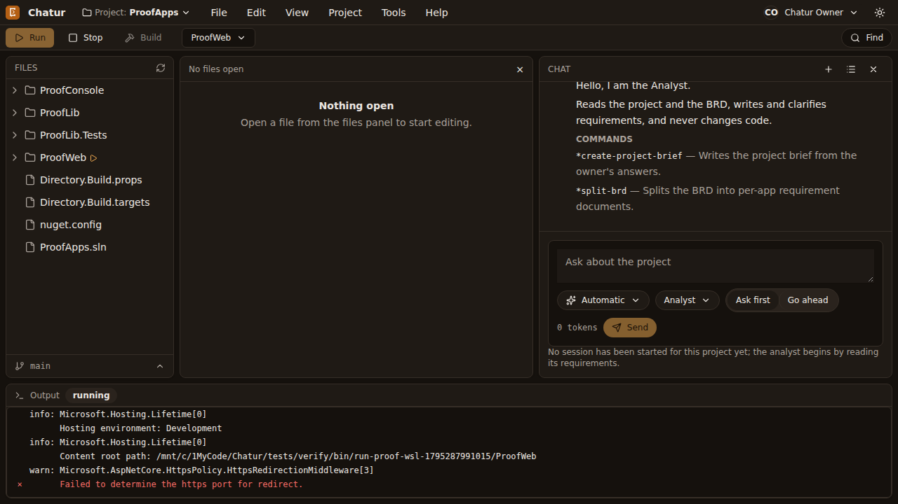
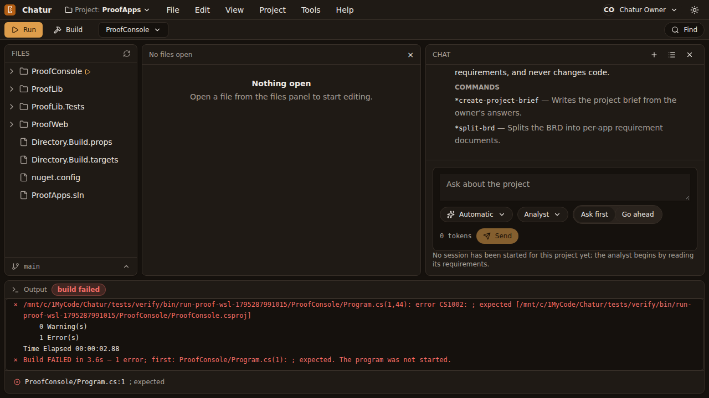
Call chain: AppToolbar.razor.cs:RunAsync → BuildRunActions.RunAsync (:212) → RunGuardedAsync (:295) → RunInBackgroundAsync (:311) → BuildCoreAsync (:166, dotnet build) → IProcessLauncher.RunAsync (dotnet run --no-build or dotnet test --no-build); OutputStrip.razor.cs:ConsumeOutputAsync → BuildRunActions.StreamOutputAsync
Build and Run are in the toolbar and in the Project menu; both call the same action. Run targets come from table RunTarget; a solution's targets are its runnable projects and its test projects (SolutionProjects.TestProjects, SolutionProjects.cs:99), whose run runs their tests.
Since 21 Nov 2026 Run builds first, in the open: every line of dotnet build is shown, compiler errors marked. A failed build writes BuildFailedLine (:207) plus "The program was not started." and stops. A good one writes "Built in …s — starting it" and runs what it built with the project's first Project launch profile (LaunchSettings.ProjectProfile, LaunchSettings.cs:33; --no-launch-profile without one). A web project's "Now listening on" line (LaunchSettings.ListeningAddress, :94) opens the browser once per run at the profile's first address (BrowserAddress, :106) through IProcessLauncher.OpenBrowserAsync. The end is always "Process exited with code N." (:377).
RunGuardedAsync exists because the run is started without waiting for it: before it, an exception thrown before the program started (a target id no longer the project's, a project row gone) ended the task unseen, and Output kept "nothing run yet" while Run stayed busy (the owner's report of 21 Nov). Every such failure is now a "Failed to run:" line, which ends the run; LoadTargetAsync (:424) says why in plain words, and the toolbar reads the targets again (AppToolbar.razor.cs:158).
Output is not pushed to the page. BuildRunActions keeps one RunState per project with a list of lines and a generation number; StreamOutputAsync returns new lines every 150 milliseconds. OutputStrip draws them and WorkbenchState.NotifyBuildOrRunStarted (WorkbenchState.cs:76) shows the strip if View ▸ Output had hidden it. AppToolbar.WatchOutputAsync (:158) clears the busy flag only on Chatur's own end lines (TerminalLine, :164): dotnet's "Build succeeded." inside a run is not one.
| File and line | Function | Watch | Expected value |
|---|---|---|---|
src/Chatur.Core/BuildRun/BuildRunActions.cs:166 | BuildCoreAsync | vArguments, vErrors.Count | build, the project path, -c and the configuration; 0 for a good build |
src/Chatur.Core/BuildRun/BuildRunActions.cs:311 | RunInBackgroundAsync | vProfile?.Name, vIsWeb, vArguments | the launch profile; true for a web project; run … --no-build --launch-profile "…" |
src/Chatur.Core/BuildRun/BuildRunActions.cs:353 | RunInBackgroundAsync | vBrowserOpened | 0 until the first "Now listening on", then 1 |
src/Chatur.Core/BuildRun/BuildRunActions.cs:295 | RunGuardedAsync | the caught exception | none on a normal run |
src/ChaturUI/Shell/AppToolbar.razor.cs:58 | EnsureTargetsLoadedAsync | vKey | the project's id and path: a reused id with a new path reloads the targets |
Theme#
Call chain: ThemeToggle.razor.cs:ToggleModeAsync → ThemeActions.ChooseAsync → table Setting, then AppState.SetTheme → ThemeHost.razor.cs:ApplyAsync → ThemeInterop.SetThemeAsync
ThemeHost is drawn once per window by ChaturRoutes.razor:25. On start it reads the stored choice with ThemeActions.CurrentAsync and sets AppState. After the first draw it asks the browser whether the system is dark, then applies the theme. Every later AppState.Changed applies it again. A built-in theme is applied by name; the CSS for the four built-in themes is linked in src/Chatur/wwwroot/index.html:14 to :17. A theme added from a file is applied by passing its colour values.
The Sign in and Register pages use BareLayout, whose two buttons (BareLayout.razor.cs:36) change AppState only. That choice is not saved, because nobody is signed in yet.
| File and line | Function | Watch | Expected value |
|---|---|---|---|
src/ChaturUI/Shell/ThemeHost.razor.cs:38 | OnInitializedAsync | vCurrent.ThemeName, vCurrent.Mode | the stored choice; amber and dark on a new install |
src/ChaturUI/Shell/ThemeToggle.razor.cs:27 | ToggleModeAsync | vMode | the opposite of what is showing |
src/ChaturUI/Services/ThemeInterop.cs:36 | SetThemeAsync | aThemeName, aIsDark | the values now in AppState |
Configuration, logging, errors#
- Service registration:
src/Chatur/MauiProgram.cs:77(RegisterServices), which callsAddChaturCore(src/Chatur.Core/ServiceCollectionExtensions.cs:40) andAddChaturUI(src/ChaturUI/Services/ServiceCollectionExtensions.cs:18). - Configuration file:
src/Chatur/appsettings.json, embedded in the app and loaded atMauiProgram.cs:142. It holdsAppManager:BaseUrlandAppManager:ApplicationId. - User secrets: loaded in Debug builds only, at
MauiProgram.cs:160.AppManager:ApiKeyandAppManager:ApiSecretare read atServiceCollectionExtensions.cs:62and:68. Never put a key inappsettings.json. - Release feed address: key
Chatur:Releases:ApiBaseAddress, read insrc/Chatur.Core/Prerequisites/ReleaseFeedAddress.cs:21. - Data folder and database file:
src/Chatur/Platform/MauiAppPaths.cs:14and:21(chatur.db). A test run is sent to its own folder bysrc/Chatur.Core/Platform/TestDataGuard.cs:40. - Database connection:
src/Chatur.Core/Data/SqliteConnectionFactory.cs:24; each call opens a new connection and turns foreign keys on. - Database changes:
ChaturDbMigrator.Migrate(src/ChaturDb/ChaturDbMigrator.cs:35), called atMauiProgram.cs:56. A failed migration is logged as fatal and the app still starts. - Logging: Serilog, set up at
MauiProgram.cs:103. One file per day,logs/chatur-.logunder the data folder, 14 files kept. Microsoft sources log from Warning up. - Unhandled exceptions:
MauiProgram.cs:120. Unobserved task exceptions:MauiProgram.cs:129; they are logged as "Unobserved task exception" and marked observed. - Errors shown to the person: toasts through
ToastService, drawn byToastProvideratsrc/ChaturUI/ChaturRoutes.razor:20. Action classes throwArgumentException,InvalidOperationExceptionorKeyNotFoundException; most pages catch the first two and show the message. - Sign-in check failure: the error box in
src/ChaturUI/Layouts/AuthGate.razor.cs:48.
Known issues#
- REQ-FN-024: an earlier reply takes the name of the agent chosen now, because
src/ChaturUI/Shell/ConversationPanel.razor:99labels every reply with the open session'sRoleName. - REQ-FN-022: checked by a hand step; no test drives it.
- REQ-FN-012: can only be checked on the Mac.
- REQ-FN-001, REQ-FN-002, REQ-FN-030, REQ-FN-048, REQ-FN-004: checked by hand steps, not by a test.
- Sign out leaves the window on "Loading Chatur" until the app is reopened; start at the forced reload in
src/ChaturUI/Shell/AccountMenu.razor.cs:58. - Closing the secondary window logs an unobserved WebView2
SendMessageerror; it reaches the log throughsrc/Chatur/MauiProgram.cs:129.